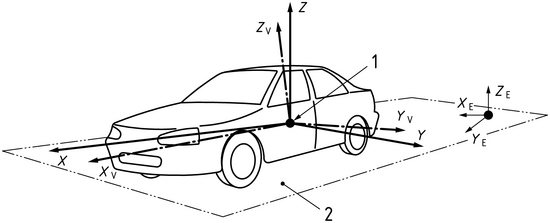
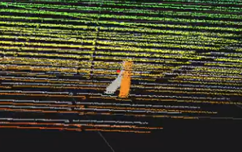

GenericModelOutput#
GenericModelOutput is a common data structure that is used by all sensor extensions to represent the output of the sensor.
The output is defined according to ISO8855 sensor frame, which means the following:
Angles are in degrees from [-180, 180] for azimuth and [-90, 90] for elevation in a right-handed coordinate system.
Front is +x, left is +y, up is +z.

Structure Output Members#
The following table summarizes the members of the GenericModelOutput structure.
Attribute |
Type |
Description |
|---|---|---|
magicNumber |
uint32_t |
A unique identifier for the output. Should reflect
|
majorVersion |
uint32_t |
The major version number of the model output. |
minorVersion |
uint32_t |
The minor version number of the model output. |
patchVersion |
uint32_t |
The patch version number of the model output. |
sizeInBytes |
uint64_t |
The size in bytes of the contiguous buffer of the model output (incl. the struct itself). |
numElements |
uint32_t |
The number of elements in the array members of the model output. |
frameOfReference |
FrameOfReference |
The frame of reference for the model output.
Can be |
motionCompensationState |
MotionCompensationState |
The motion compensation state for the model output.
Can be |
frameId |
uint64_t |
The model (simulation) frame ID of the model output. |
timestampNs |
uint64_t |
The timestamp of the model output in nanoseconds. |
elementsCoordsType |
CoordsType |
The type of coordinates used in the model output.
Can be |
outputType |
OutputType |
The type of output.
The default value is |
modelToAppTransform |
float[16] |
A transformation matrix that transforms from the model’s coordinate system to the application’s coordinate system. |
frameStart |
FrameAtTime |
The start frame of the model output. It transforms from the model’s coordinate system to the global coordinate system at frame start time. |
frameEnd |
FrameAtTime |
The end frame of the model output. It transforms from the model’s coordinate system to the global coordinate system at frame end time. |
auxType |
AuxType |
The specific level of auxiliary data. The default value
is |
modality |
Modality |
The modality which produced this output. The default
value is |
elements |
BasicElements |
The basic elements of the model output. See below for more information. |
auxiliaryData |
void* |
A pointer to the auxiliary data. This may not be filled.
Can be |
BasicElements#
This table represents the basic elements of the model output.
Attribute |
Type |
Description |
|---|---|---|
timeOffsetNs |
int32_t* |
The offset time of this element with respect to the parent GenericModelOutput structure’s timestampNs. |
x |
float* |
Modality specific: - Lidar/Radar: Azimuth in degrees [-180,180] or x in m - Acoustic: Transmitter sensor mount ID |
y |
float* |
Modality specific: - Lidar/Radar: Elevation in degrees or y in m - Acoustic: Receiver sensor mount ID |
z |
float* |
Modality specific: - Lidar/Radar: Distance in m or z in m - Acoustic: Channel ID |
scalar |
float* |
Sensor modality specific output scalar. - Lidar: Normalized intensity value - Acoustic: Amplitude sample value - Radar: RCS value in dBsm (check modality specific documentation for details) |
flags |
uint8_t* |
Sensor specific flags representing ElementFlags enum values, eg. element validity. |
FrameAtTime#
This table represents a frame at a specific time.
Attribute |
Type |
Description |
|---|---|---|
timestampNs |
uint64_t |
The timestamp of the frame in nanoseconds. The default
value is |
orientation |
float[4] |
The quaternion orientation of the frame. |
posM |
float[3] |
The position of the frame in meters. |
padding |
uint8_t[4] |
Padding to align the structure to a multiple of 8 bytes. |
FrameOfReference#
This table represents the frame of reference for the model output.
Attribute |
Type |
Description |
|---|---|---|
SENSOR |
enum |
The sensor frame of reference. The sensor pose defines the origin. |
PARENT |
enum |
The parent frame of reference. For example, the origin of an asset the sensor is mounted on. |
WORLD |
enum |
The world frame of reference. The origin is the center of the world. |
CUSTOM |
enum |
The custom frame of reference. The origin and orientation are defined by the user. |
MotionCompensationState#
This table represents the motion compensation state for the model output. a motion-compensated output (e.g., a point cloud) means that if each element/point had a different detection time and the sensor was moving then the actual coordinates of the elements are figured out and corrected accounting for the sensor’s motion.
Examples:
A rotary-scanning lidar moving forward and detecting a circle on the ground.
Non-compensated: the circle will look as a complete closed circle, with all points at same range (sensor-to-ground distance).
Compensated: the circle will have a tear in it because when completing the scan the sensor would have moved.
A solid-state line-scanning lidar that is moving detecting a vertical pole.
Non-compensated: the pole will look slanted.
Compensated: the pole will look vertical.
{kind=link}

Attribute |
Type |
Description |
|---|---|---|
NONCOMPENSATED |
enum |
The non-compensated state. |
COMPENSATED |
enum |
The compensated state. |
NOT_APPLICABLE |
enum |
The not applicable state. |
CoordsType#
This table represents the type of coordinates used in the model output.
Attribute |
Type |
Description |
|---|---|---|
CARTESIAN |
enum |
The Cartesian coordinates. |
SPHERICAL |
enum |
The spherical coordinates. The x, y, z of BasicElements contains: azimuth, elevation, distance. |
NOT_APPLICABLE |
enum |
The not applicable coordinates (e.g. pixels). |
ElementFlags#
This table represents flags for elements. each value is a bit mask for the uint8_t flags member of BasicElements. currently only the VALID flag is used, and modalities do not add any additional flags.
Attribute |
Type |
Description |
|---|---|---|
FLAG_1 |
enum |
The first flag. Placeholder for modality specific flags. |
FLAG_2 |
enum |
The second flag. Placeholder for modality specific flags. |
FLAG_3 |
enum |
The third flag. Placeholder for modality specific flags. |
FLAG_4 |
enum |
The fourth flag. Placeholder for modality specific flags. |
FLAG_5 |
enum |
The fifth flag. Placeholder for modality specific flags. |
FLAG_6 |
enum |
The sixth flag. Placeholder for modality specific flags. |
FLAG_7 |
enum |
The seventh flag. Placeholder for modality specific flags |
VALID |
enum |
The valid flag. Set if element is valid. |
OutputType#
This table represents the type of output.
Attribute |
Type |
Description |
|---|---|---|
POINTCLOUD |
enum |
The point cloud type. Only option available currently. |
Modality#
This table represents the modality of the model which produced this output.
Attribute |
Type |
Description |
|---|---|---|
UNDEFINED |
enum |
The undefined modality. |
LIDAR |
enum |
The Lidar sensor modality. |
RADAR |
enum |
The Radar sensor modality. |
ACOUSTIC |
enum |
The acoustic sensor modality. |
IDS |
enum |
The Idealized Depth Sensor modality. |
AuxType#
This table represents the type of auxiliary data that can be filled for a sensor. The tables below detail the different types of auxiliary data for each modality.
Attribute |
Type |
Description |
|---|---|---|
NONE |
enum |
No auxiliary data. |
BASIC |
enum |
Basic auxiliary data. |
EXTRA |
enum |
Extra auxiliary data. |
FULL |
enum |
Full auxiliary data. |
AuxiliaryData#
Every modality has its specific auxiliary data. See AuxType enum above for a list of available auxiliary data types. Below are the structures for the supported modalities:
LidarAuxiliaryData#
The LidarAuxiliaryData structure contains auxiliary data for a Lidar sensor. Every pointer instance is an array of size numElements.
Attribute |
Type |
Description |
AuxType Support |
|---|---|---|---|
scanComplete |
uint32_t |
Whether the scan is complete. |
>= BASIC |
azimuthOffset |
float |
The offset to +x in degrees for specific sensors. |
>= BASIC |
filledAuxMembers |
LidarAuxHas |
Which auxiliary data is filled. |
>= BASIC |
padding |
uint8_t[4] |
Padding to align the structure to a multiple of 8 bytes. |
>= BASIC |
emitterId |
uint32_t* |
The emitter index array for a hit from a ray firing. |
>= BASIC |
channelId |
uint32_t* |
The channel index array for a hit from a ray firing. |
>= BASIC |
matId |
uint32_t* |
The material index array. Identifies with a geom matID. |
>= EXTRA |
tickId |
uint32_t* |
The tick index array. Identifies the current tick. |
>= BASIC |
hitNormals |
float* |
The hit normals array. Returned normals from geometries. |
>= FULL |
velocities |
float* |
The velocity array. Returned velocities from geometries. |
>= FULL |
objId |
uint8_t* |
The object index array (stride 16, 128-bit stable ID). |
>= EXTRA |
echoId |
uint8_t* |
The echo index array. Identifies with multiple echos. |
>= BASIC |
tickStates |
uint8_t* |
The tick states index array for multiple emitter states. |
>= BASIC |
The LidarAuxHas enum class is used to specify which auxiliary data is filled for a Lidar sensor. Values are bit masks for the
filledAuxMembers member of LidarAuxiliaryData.
Attribute |
Type |
Description |
|---|---|---|
NONE |
enum |
No auxiliary data is filled. |
EMITTER_ID |
enum |
The emitter ID is filled. |
CHANNEL_ID |
enum |
The channel ID is filled. |
ECHO_ID |
enum |
The echo ID is filled. |
MAT_ID |
enum |
The material ID is filled. |
OBJ_ID |
enum |
The object ID is filled. |
TICK_ID |
enum |
The tick ID is filled. |
TICK_STATES |
enum |
The tick states are filled. |
HIT_NORMALS |
enum |
The hit normals are filled. |
VELOCITIES |
enum |
The velocities are filled. |
AcousticAuxiliaryData#
The AcousticAuxiliaryData structure contains auxiliary data for an acoustic sensor.
Understanding Acoustic Output Organization:
Acoustic sensors organize their output as signal ways. A signal way represents the acoustic waveform received at one receiver from one transmitter on a specific channel. Each signal way contains:
Metadata fields from BasicElements (timeOffsetNs, x=transmitter ID, y=receiver ID, z=channel ID)
A sequence of amplitude samples representing the received acoustic signal over time
When a firing event occurs (as defined in the sensor’s firing sequences), the WPM model simulates acoustic wave propagation from the transmitting sensor mount to each receiver in the specified receiver group. Each transmission-to-receiver pair produces one signal way.
Example: If a firing event has transmitter=0, receiver group=[0,1,2], and channel=0, the model generates 3 signal ways (0→0, 0→1, 0→2).
The total number of signal ways per frame depends on the firing sequence configuration. A complex firing sequence with multiple events and large receiver groups will produce more signal ways than a simple sequence.
The auxiliary data specifies the dimensionality of the signal way output:
Attribute |
Type |
Description |
AuxType Support |
|---|---|---|---|
numSgws |
uint32_t |
The number of signal ways in this frame. Depends on the firing sequence configuration (number of events multiplied by receivers per event). |
>= BASIC |
numSamplesPerSgw |
uint32_t |
The number of amplitude samples per signal way. Determined by pulse duration and sample rate. |
>= BASIC |
RadarAuxiliaryData#
The RadarAuxiliaryData structure contains auxiliary data for a Radar sensor.
Attribute |
Type |
Description |
AuxType Support |
|---|---|---|---|
sensorID |
uint8_t |
The ID of the sensor that generated the scan. |
>= BASIC |
scanIdx |
uint8_t |
The scan index for sensors with multi-scan support. |
>= BASIC |
padding |
uint8_t[6] |
Padding to align the structure to a multiple of 8 bytes. |
>= BASIC |
cycleCnt |
uint64_t |
The scan cycle count (unique per scan index). |
>= BASIC |
maxRangeM |
float |
The maximum unambiguous range for the scan in meters. |
>= BASIC |
minVelMps |
float |
The minimum unambiguous velocity for the scan in m/s. |
>= BASIC |
maxVelMps |
float |
The maximum unambiguous velocity for the scan in m/s. |
>= BASIC |
minAzRad |
float |
The minimum unambiguous azimuth for the scan in rads. |
>= BASIC |
maxAzRad |
float |
The maximum unambiguous azimuth for the scan in rads. |
>= BASIC |
minElRad |
float |
The minimum unambiguous elevation for the scan in rads. |
>= BASIC |
maxElRad |
float |
The maximum unambiguous elevation for the scan in rads. |
>= BASIC |
padding2 |
uint8_t[4] |
Padding to align the structure to a multiple of 8 bytes. |
>= BASIC |
rv_ms |
float* |
The radial velocity (m/s), always filled. |
>= BASIC |
IDSAuxiliaryData#
The IDSAuxiliaryData structure contains auxiliary data for an IDS (Idealized Depth Sensor) sensor.
Attribute |
Type |
Description |
AuxType Support |
|---|---|---|---|
numRows |
uint32_t |
The number of rows in the sensor’s field of view. |
>= BASIC |
numCols |
uint32_t |
The number of columns in the sensor’s field of view. |
>= BASIC |
minColUnit |
float |
The minimum column unit of the specified field of view. |
>= BASIC |
maxColUnit |
float |
The maximum column unit of the specified field of view. |
>= BASIC |
minRowUnit |
float |
The minimum row unit of the specified field of view. |
>= BASIC |
maxRowUnit |
float |
The maximum row unit of the specified field of view. |
>= BASIC |
emitterCfgOriginX |
float |
The x-coordinate (m) of the origin of the emitter config. |
>= BASIC |
emitterCfgOriginY |
float |
The y-coordinate (m) of the origin of the emitter config. |
>= BASIC |
emitterCfgOriginZ |
float |
The z-coordinate (m) of the origin of the emitter config. |
>= BASIC |
emitterGenType |
int |
The type of the emitter generation. |
>= BASIC |
elementSize |
float |
The maximum size of the spatial element to generate. |
>= BASIC |
radius |
float |
The radius (m) at which the element size is defined. |
>= BASIC |
filledAuxMembers |
IDSAuxHas |
Which auxiliary data is filled. |
>= BASIC |
padding |
uint8_t[4] |
Padding to align the structure to a multiple of 8 bytes. |
>= BASIC |
originX |
float* |
The x-coordinates (m) of the origins. |
>= BASIC |
originY |
float* |
The y-coordinates (m) of the origins. |
>= BASIC |
originZ |
float* |
The z-coordinates (m) of the origins. |
>= BASIC |
objectId |
uint32_t* |
The object IDs. |
>= BASIC |
materialId |
uint32_t* |
The material IDs. |
>= BASIC |
velocities |
float* |
The velocities in m/s. |
>= BASIC |
The IDSAuxHas enum class is used to specify which auxiliary data is filled for an IDS sensor. Values are bit masks for the
filledAuxMembers member of IDSAuxiliaryData.
Attribute |
Type |
Description |
|---|---|---|
NONE |
enum |
No auxiliary data is filled. |
VELOCITIES |
enum |
The velocities are filled. |
Note
One important note is that, for the contiguous buffer, additional padding bytes are added after the last flags element (just before the auxiliary data struct) to ensure that the structure is aligned to a multiple of 8 bytes. This is done by the following code snippet:
if (size % 8 != 0)
{
size += 8 - (size % 8); // This also has to be done for reading the auxiliary data from the buffer (where size is replaced by the offset to the start of the buffer)
}
Utility Functions#
Additionally, the GenericModelOutput provides utility functions, e.g, for building the structure out of a contiguous memory block, or for copying the structure.
Below, is a list of the most important utility functions:
sizeInBytes#
The sizeInBytes function is a part of the omni::sensors namespace. It calculates the total size of the GenericModelOutput structure and its elements.
Function Signature
NV_HOSTDEVICE
inline size_t sizeInBytes(const GenericModelOutput& output)
Parameters
outputconst GenericModelOutput&The
GenericModelOutputstructure for which to calculate the size.
Returns
size_tThe total size of the
GenericModelOutputstructure and its elements.
Description
This function calculates the total size of the GenericModelOutput structure and its elements. This includes the common basic elements and the auxiliary data.
The auxiliary data is sensor modality specific and will reflect the correct size based upon the GenericModelOutput modality field.
getModelOutputPtrFromBuffer#
The getModelOutputPtrFromBuffer function is a part of the omni::sensors namespace. It retrieves a pointer to a GenericModelOutput structure from a buffer, setting up both basic element pointers and modality-specific auxiliary data pointers.
Function Signature
NV_HOSTDEVICE
inline GenericModelOutput* getModelOutputPtrFromBuffer(void* inData)
Parameters
inDatavoid*The input data buffer from which to retrieve the
GenericModelOutputstructure.
Returns
GenericModelOutput*A pointer to the
GenericModelOutputstructure retrieved from the buffer, ornullptrif the magic number or version is invalid.
Description
This function first checks if the magic number of the GenericModelOutput structure is correct. If it is, the function then checks if the version of the GenericModelOutput structure is supported. If the version is supported, the function sets the basic elements and auxiliary data of the GenericModelOutput structure. If the magic number or version is not correct, the function prints an error message.
Internally, it delegates to getBaseGMOPtrFromBuffer (which sets up the BasicElements SoA pointers) and setBufferAuxiliaryData (which sets up modality-specific auxiliary data pointers).
getModelOutputFromBuffer#
The getModelOutputFromBuffer function is a part of the omni::sensors namespace. It returns a copy of a GenericModelOutput structure from a buffer (value semantics).
Function Signature
NV_HOSTDEVICE
inline GenericModelOutput getModelOutputFromBuffer(void* inData)
Parameters
inDatavoid*The input data buffer from which to retrieve the
GenericModelOutputstructure.
Returns
GenericModelOutputA copy of the
GenericModelOutputstructure. If the buffer is invalid, the returned structure will havemagicNumberset to0.
cpyGMOToGMO#
The cpyGMOToGMO function is a part of the omni::sensors namespace. It copies the contents of one GenericModelOutput structure to another, handling host/device memory transfers via CUDA.
Function Signature
inline void cpyGMOToGMO(GenericModelOutput& dst,
const GenericModelOutput& src,
const int cudaDevice = -1,
const cudaStream_t stream = 0)
Parameters
dstGenericModelOutput&The destination
GenericModelOutputstructure.
srcconst GenericModelOutput&The source
GenericModelOutputstructure to copy from.
cudaDeviceintThe CUDA device to use. Default is
-1.
streamcudaStream_tThe CUDA stream to use. Default is
0.
Description
This function copies all basic elements and auxiliary data from src to dst. It automatically detects whether the source and destination memory reside on host or device and selects the appropriate CUDA memory copy kind. Both source and destination must have their element pointers allocated via CUDA-managed memory.
cpyGMOToBuffer#
The cpyGMOToBuffer function is a part of the omni::sensors namespace. It copies a GenericModelOutput structure to a buffer.
Function Signature
inline void cpyGMOToBuffer(uint8_t* buffer,
const omni::sensors::GenericModelOutput* gpc,
const bool bufferOnHost = true, // not needed for cpu only
const bool pointerOnHost = true, // not needed for cpu only
const int32_t cudaDevice = -1, // not needed for cpu only
const cudaStream_t stream = 0) // not needed for cpu only
Parameters
bufferuint8_t*The buffer to which to copy the
GenericModelOutputstructure.
gpcconst omni::sensors::GenericModelOutput*The
GenericModelOutputstructure to copy.
bufferOnHostboolWhether the buffer is on the host. Default is
true.
pointerOnHostboolWhether the pointer is on the host. Default is
true.
cudaDeviceint32_tThe CUDA device to use. Default is
-1.
streamcudaStream_tThe CUDA stream to use. Default is
0.
Description
This function first checks if the magic number of the GenericModelOutput structure is correct. If it is, the function then checks if the version of the GenericModelOutput structure is supported. If the version is supported, the function sets the copy kind based on whether the buffer and pointer are on the host or device. If the magic number or version is not correct, the function prints an error message.
The function then copies the GenericModelOutput structure to the buffer using the appropriate copy kind.
String Conversion Helpers#
The following helper functions convert string representations to their corresponding enum values. They are useful when parsing configuration from text-based sources.
CoordsType getCoordsTypeFromString(const char* coordsString)Converts a string (
"SPHERICAL","CARTESIAN") to aCoordsTypeenum value. Defaults toCoordsType::SPHERICAL.
FrameOfReference getFrameOfReferenceFromString(const char* frameString)Converts a string (
"SENSOR","WORLD","CUSTOM","PARENT") to aFrameOfReferenceenum value. Defaults toFrameOfReference::SENSOR.
MotionCompensationState getMotionCompensationStateFromString(const char* frameString)Converts a string (
"COMPENSATED","NONCOMPENSATED","NOT_APPLICABLE") to aMotionCompensationStateenum value. Defaults toMotionCompensationState::NOT_APPLICABLE.
Plugins#
IGenericModelOutputIO#
The IGenericModelOutputIO class is an interface for generic model output I/O operations. It writes and reads into a HDF5 file.
Methods#
void init(const GMOIOConfig& cfg)Initializes the
IGenericModelOutputIOinterface with the given configuration.
void writeModelOutput(const GenericModelOutput& modelOutput)Writes the given model output.
GenericModelOutput readModelOutput(const char* clientName = nullptr, const int frameId = -1)Reads a model output. If a client name is given, it reads the model output for that client. If a frame ID is given, it reads the specific frame. If no arguments are given, it reads frames in order.
void addPacket(void* packet, const size_t packetSize)Adds a packet with the given size.
Initialization#
To get an object of the IGenericModelOutputIO interface, you need to call the omni::sensors::GenericModelOutputIOFactory::createInstance() static method.
To initialize the IGenericModelOutputIO interface, you need to create a GMOIOConfig structure and call the init method.
GMOIOConfig#
The GMOIOConfig structure is used to configure the IGenericModelOutputIO interface.
AccessType accessTypeThe access type for the
IGenericModelOutputIOinterface. Default isAccessType::RECORD_FULL. SeeAccessTypeenum below.
bool onlyValidWhether to only consider valid data. Default is
false.
bool loopWhether to loop the data. Default is
false. Only needed forAccessType::READ.
uint32_t maxPointsThe maximum number of points. Default is
0. Only needed forAccessType::READ.
char* fileNameThe name of the file. Default is
nullptr.
char* groupNameThe name of the group. Default is
nullptr.
char* clientNameThe name of the client. Default is
nullptr.
AccessType#
The AccessType enum specifies how the IGenericModelOutputIO interface accesses data.
Attribute |
Type |
Description |
|---|---|---|
READ |
enum |
Read mode for playing back recorded data. |
RECORD_BASIC |
enum |
Record mode that stores basic data only. |
RECORD_FULL |
enum |
Record mode that stores full data including auxiliary. |
GenericModelOutputFlags#
The GenericModelOutputFlags enum provides bit flags for tracking the state of model output buffers and recording.
Attribute |
Type |
Description |
|---|---|---|
BUFFER_COMPLETE |
enum |
Flag indicating the buffer is complete. |
RECORD_COMPLETE |
enum |
Flag indicating the recording is complete. |
Python Bindings#
Python bindings are provided via a pybind11 module (_rtx_sensors_gmo), re-exported through
omni.sensors.generic_model_output. All enums, structures, and the I/O interface described in the
sections above are available from Python with identical names and semantics. This section documents
only the aspects that differ from or extend the C++ API.
Module-Level Functions#
Two convenience functions are available at module scope (not present in the C++ public API):
Function |
Return Type |
Description |
|---|---|---|
getMagicNumberGMO() |
int |
Returns the magic number constant ( |
getModelOutputFromBuffer(buf) |
GenericModelOutput |
Parses a |
Array Semantics#
Scalar structure members (magicNumber, frameId, modality, etc.) are exposed as
read/write Python attributes. Array members are exposed as read-only NumPy arrays that share
memory with the underlying C++ buffer - no copy is made. This includes:
modelToAppTransform-float32array of shape(16,).The
BasicElementsarrays (x,y,z,scalar,flags,timeOffsetNs) - each of lengthnumElements.All modality-specific auxiliary arrays (e.g.,
emitterId,rv_ms,originX) - lengths and element types match the C++ definitions above. Auxiliary arrays that depend onfilledAuxMembers(e.g.,channelId,hitNormals,idsVelocities) return an empty array when their flag is not set.
FrameAtTime exposes posM and orientation as Python list[float] (lengths 3 and 4
respectively) rather than NumPy arrays, since these are fixed-size small vectors.
Differences from the C++ API#
Item |
Note |
|---|---|
timeOffSetNs |
Deprecated alias for |
idsFilledAuxMembers |
Named |
idsVelocities |
Named |
readModelOutput |
Signature is |
IGenericModelOutputIO() |
Can be constructed directly; internally calls
|
GMOIOConfig strings |
|
Example#
from omni.sensors.generic_model_output import (
GenericModelOutput,
GMOIOConfig,
IGenericModelOutputIO,
AccessType,
getModelOutputFromBuffer,
)
# Reading from an HDF5 file
cfg = GMOIOConfig()
cfg.accessType = AccessType.READ
cfg.fileName = "/path/to/recording.hdf5"
reader = IGenericModelOutputIO()
reader.init(cfg)
output = reader.readModelOutput()
print(f"Frame {output.frameId}, {output.numElements} elements")
print(f"Modality: {output.modality}")
print(f"X values: {output.x[:5]}") # First 5 elements